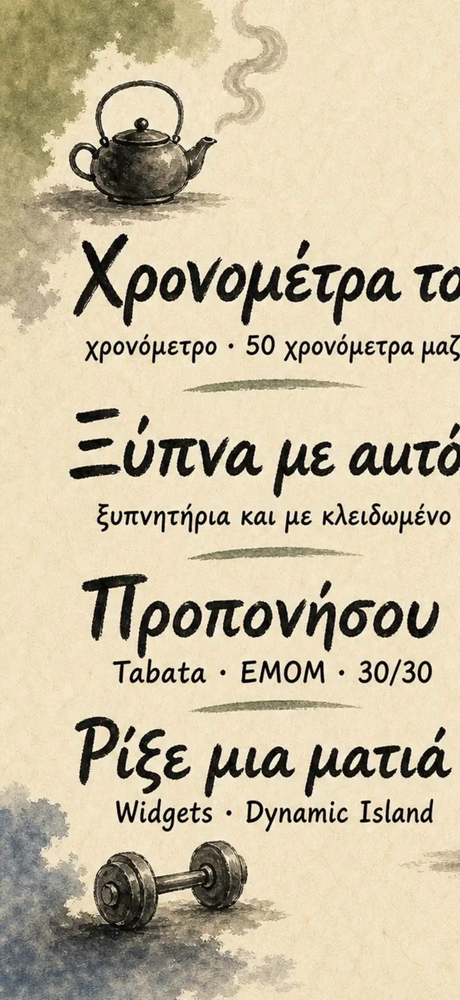
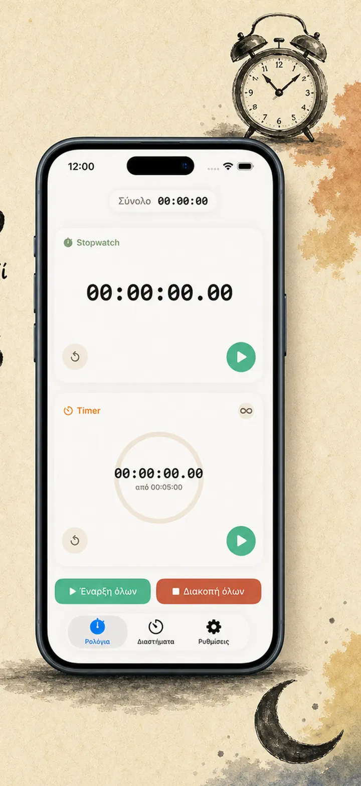
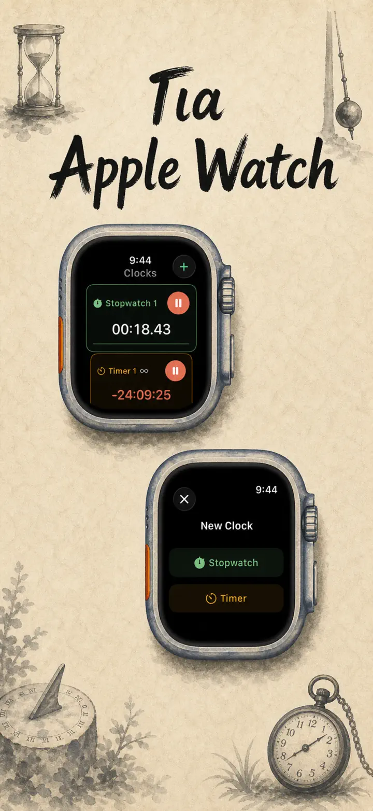
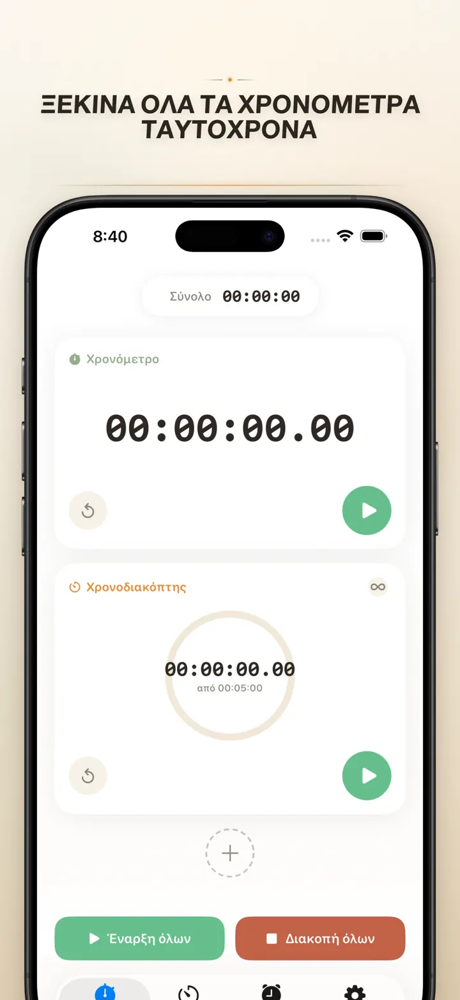
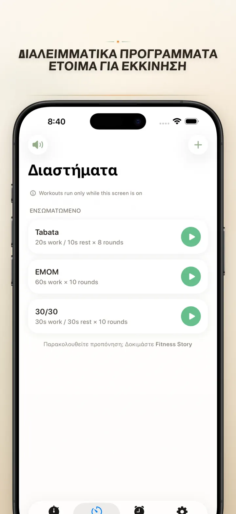
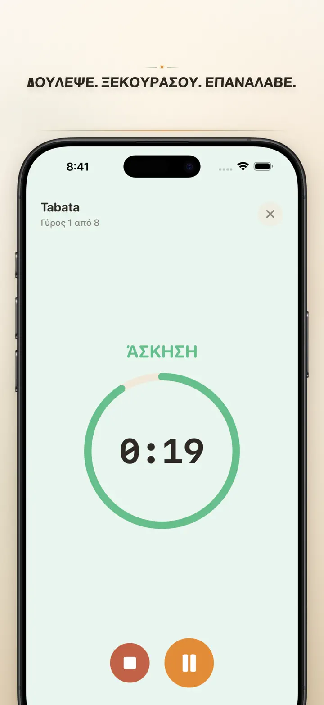
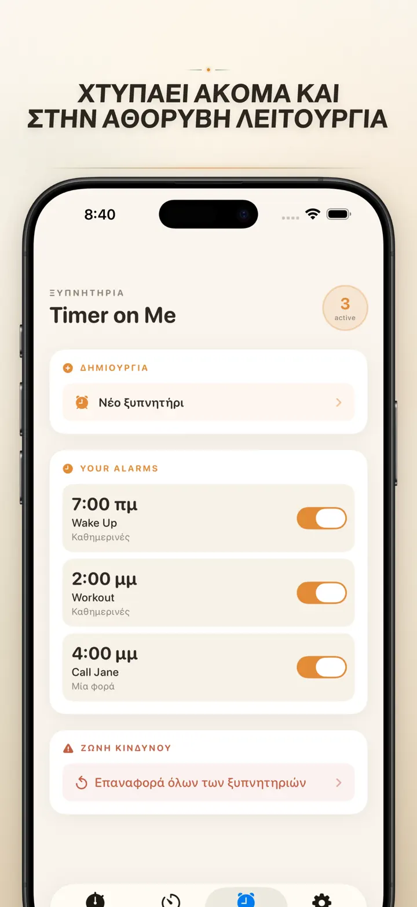

Timer on Me
Χρονόμετρο, Ξυπνητήρι, HIIT
Τώρα με ξυπνητήρια με ημερομηνία: ορίστε εφάπαξ ξυπνητήρι για οποιαδήποτε μελλοντική ημερομηνία, 50 χρονόμετρα, HIIT & Tabata και Apple Watch.
Λήψη από το App Store
Σχετικά με την εφαρμογή
Το Timer on Me είναι ο πολυχρονοδιακόπτης και το χρονόμετρό σου για iPhone, iPad και Apple Watch. Έως 50 ανεξάρτητοι χρονοδιακόπτες ταυτόχρονα, ακριβείς προπονήσεις με διαλείμματα και ξυπνητήρια που πραγματικά χτυπούν — ακόμα κι όταν το iPhone είναι κλειδωμένο ή η εφαρμογή κλειστή.
ΞΥΠΝΗΤΗΡΙΑ
- Ξυπνητήρια αφύπνισης και υπενθύμισης με δικές σου ετικέτες και προγραμματισμό ανά ημέρα
- Βασίζεται στο AlarmKit — χτυπά ακόμα κι όταν το iPhone είναι κλειδωμένο ή το Timer on Me κλειστό
- Ρυθμιζόμενο snooze (3 / 5 / 9 / 15 / 30 λεπτά) ή χωρίς snooze
- Διάλεξε ενσωματωμένους ήχους ή εισήγαγε δικούς σου
- Ενεργοποίηση/απενεργοποίηση με ένα άγγιγμα από τη νέα καρτέλα Ξυπνητήρια
ΠΡΟΠΟΝΗΣΗ ΚΑΙ ΔΙΑΛΕΙΜΜΑΤΑ
- Έτοιμα preset Tabata, EMOM και 30/30 — δύο άγγιγματα και ξεκινάς
- Δικός σου επεξεργαστής interval: δουλειά, ξεκούραση και γύροι σε λεπτά και δευτερόλεπτα
- Λειτουργία προπόνησης σε πλήρη οθόνη με αλλαγή χρώματος ανά φάση και αθόρυβη επιλογή
- Παύση, παράλειψη και συνέχεια στη μέση της συνεδρίας χωρίς απώλεια προόδου
APPLE WATCH
- Πραγματική εγγενής εφαρμογή watchOS, όχι απλή αντανάκλαση από το κινητό
- Πολλαπλά χρονόμετρα και χρονοδιακόπτες τρέχουν στον καρπό ταυτόχρονα
- Χρονόμετρο με ακρίβεια εκατοστού δευτερολέπτου
- Δικές του περίπλοκες ενδείξεις πρόσοψης για εκκίνηση με ένα άγγιγμα
- Λειτουργεί αυτόνομα, ακόμη και χωρίς το iPhone κοντά
50 ΧΡΟΝΟΔΙΑΚΟΠΤΕΣ ΤΑΥΤΟΧΡΟΝΑ
- Έως 50 ανεξάρτητοι χρονοδιακόπτες και χρονόμετρα σε μία συνεδρία
- Εκκίνηση, στοπ και μηδενισμός μεμονωμένα ή κατά ομάδες
- Αυτόματη επανάληψη για κυκλικούς γύρους
- Οι χρονοδιακόπτες συνεχίζουν μετά το μηδέν για καταγραφή υπερβάλλοντος χρόνου
- Χρωματιστές μπάρες προόδου: κίτρινο στο 50 %, κόκκινο στο 10 %
- Σύρε για να ταξινομήσεις, βάλε δικά σου ονόματα
ΑΞΙΟΠΙΣΤΕΣ ΕΙΔΟΠΟΙΗΣΕΙΣ
- AlarmKit: τα ξυπνητήρια χτυπούν ακόμα κι όταν το iPhone είναι κλειδωμένο ή η εφαρμογή κλειστή
- Dynamic Island και Live Activity — πρόοδος με μια ματιά
- Widget για την αρχική οθόνη: μικρό, μεσαίο, μεγάλο
- Ενσωματωμένοι ήχοι: καμπάνες, πουλιά, παλιά τηλέφωνα
- Πάτησε για ακρόαση πριν επιλέξεις
- Λειτουργία «Να παραμένει η οθόνη ανοιχτή» για μεγάλες συνεδρίες
ΠΡΟΣΑΡΜΟΓΗ ΚΑΙ ΚΟΙΝΟΠΟΙΗΣΗ
- Εμφάνιση ή απόκρυψη δεκαδικών, συνόλων και ποσοστών
- Αποθήκευση και αντικατάσταση preset, επαναφορά με ένα άγγιγμα
- Εξαγωγή ως CSV, JSON ή απλό κείμενο
- Μοιράσου με συναδέλφους, μαθητές ή προπονητή
ΓΙΑ iPhone, iPad ΚΑΙ APPLE WATCH
- Διάταξη που προσαρμόζεται σε κάθε μέγεθος οθόνης
- Split View στο iPad
- 34 γλώσσες
ΙΔΑΝΙΚΟ ΓΙΑ
- HIIT, Tabata, CrossFit και προπόνηση κυκλώματος
- Γύρους boxing, kickboxing και πολεμικών τεχνών
- Pomodoro, Πανελλήνιες και συγκέντρωση μελέτης
- Ελληνικό καφέ, φραπέ, βραστά αυγά, μουσακά και ώρες φούρνου
- Γιόγκα, πιλάτες, διαλογισμό και αναπνοές
- Πρόβες παρουσιάσεων και εξάσκηση οργάνου
- Μαθήματα, εργαστήρια και ομαδικές δραστηριότητες
- Επιτραπέζια παιχνίδια και βραδιές με φίλους
Κατέβασε το Timer on Me και πάρε τον έλεγχο κάθε λεπτού — στο γυμναστήριο, στη δουλειά ή στο σπίτι.
Πολιτική Απορρήτου: https://masawata.net/privacy-policy.html Όροι Χρήσης: https://www.apple.com/legal/internet-services/itunes/dev/stdeula/
Στιγμιότυπα οθόνης






Timer on Me
Τώρα με ξυπνητήρια με ημερομηνία: ορίστε εφάπαξ ξυπνητήρι για οποιαδήποτε μελλοντική ημερομηνία, 50 χρονόμετρα, HIIT & Tabata και Apple Watch.
Λήψη από το App Store